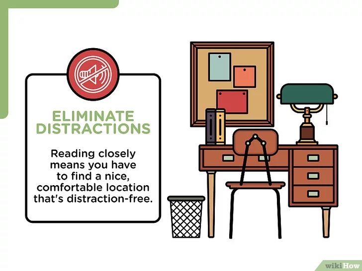
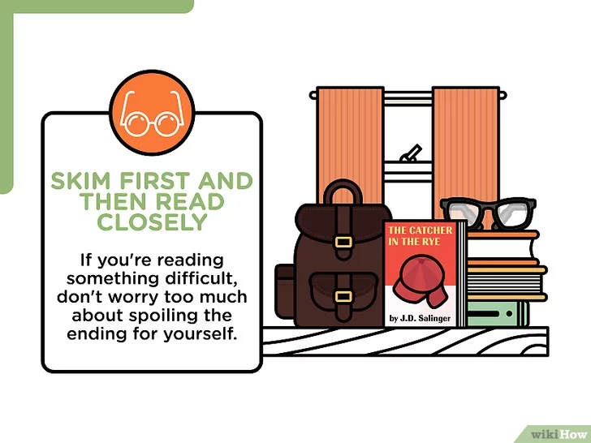
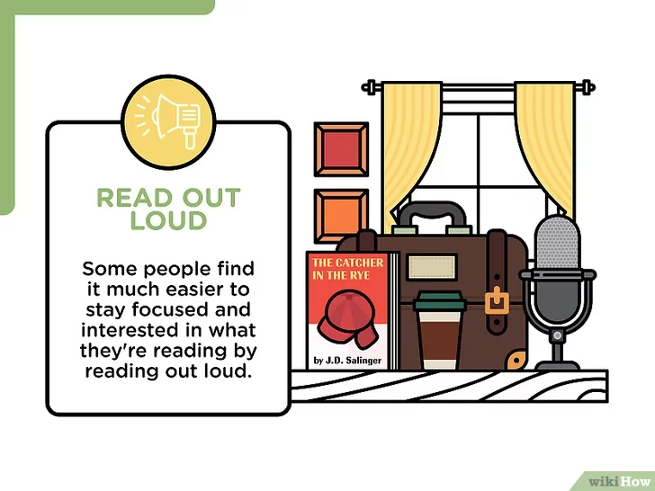
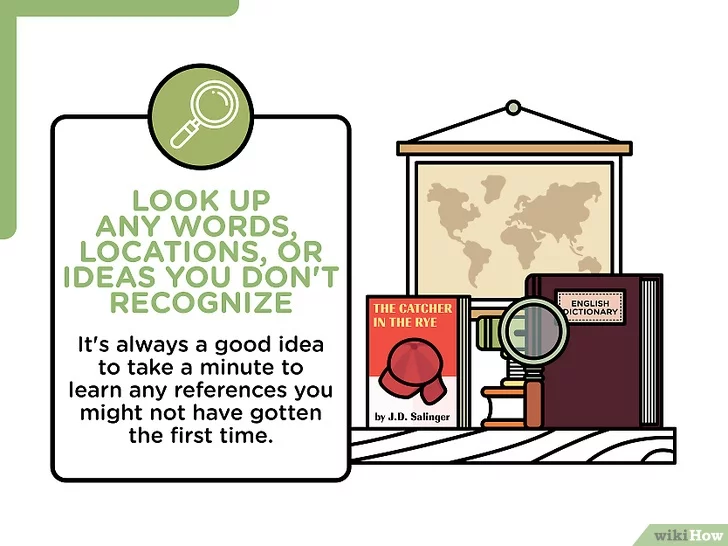
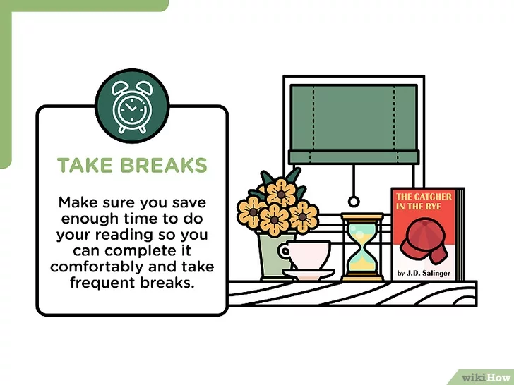

Bạn đã bao giờ đọc xong một trang sách và nhận ra mình đã mơ màng trong lúc đọc không?
Điều này xảy ra với hầu hết mọi người vào một lúc nào đó vì bạn có quá ít thời gian hoặc
không quá hứng thú với việc dành thêm là một phút nữa để đọc tác phẩm của Homer hoặc Shakespeare.
May mắn thay, việc học cách đọc sách thật tập trung và ghi chú sẽ giúp quá trình đọc trở nên dễ dàng hơn,
nhanh hơn và thú vị hơn. Hãy xem tiếp nội dung bên dưới để biết cách đọc sách hiệu quả.
--- Đọc Sách Một Cách Tập Trung ---

Tránh những thứ gây xao lãng. Hãy tắt máy tính, tivi và tiếng nhạc.
Bạn sẽ khó mà tập trung đọc, đặc biệt khi đọc nội dung gì đó khó hiểu nếu bị phân tâm.
Tập trung đọc sách có nghĩa là bạn sẽ tìm một nơi thoải mái, dễ chịu và không khiến bạn
bị mất tập trung.
Làm cho việc đọc sách vui hơn bằng cách chuẩn bị thêm đồ ăn nhẹ hoặc thức uống và tạo
cảm giác thoải mái. Thắp một cây nến thơm hoặc đọc sách khi tắm bồn sẽ giúp bạn cảm thấy
sảng khoái và làm cho việc đọc sách thú vị hơn, đặc biệt khi bạn không quá hứng thú với
nội dung đang đọc.

Đọc lướt trước khi đọc kỹ. Nếu đọc nội dung gì đó khó hiểu, bạn đừng quá lo là mình
sẽ mất hứng thú vì đã biết kết cục. Nếu đang đọc một đoạn nào đó và phải đọc lại từ đầu,
bạn nên thử đọc lướt qua toàn bộ câu chuyện hoặc lật sang một vài trang sách tiếp theo để
hiểu bối cảnh, các nhân vật chính và giọng điệu của nội dung đang đọc; như vậy, bạn sẽ biết
phải tập trung vào điều gì khi đọc kỹ nội dung.[1]
Tìm đọc tóm tắt (chẳng hạn như trên trang Cliff’s Note) hoặc nội dung của sách qua mạng
Internet là một cách hay để nắm ý chính nhằm giúp bạn dễ hiểu quyển sách hơn, nhưng lưu ý
rằng một số giáo viên sẽ không hài lòng với việc này và có thể cho điểm thấp hoặc không
cho điểm nếu họ biết bạn chỉ đọc tóm tắt. Vì vậy, đừng quên mở sách ra và đọc thật kỹ.

Hình dung về những gì bạn đang đọc. Hãy tưởng tưởng bạn là một đạo diễn phim và hình
dung diễn biến trong khi đọc. Lên danh sách diễn viên cho bộ phim nếu thấy hiệu quả và
cố gắng hình dung các sự kiện càng thực tế càng tốt. Đây là một hoạt động rất thú vị và
giúp bạn nhớ cũng như hiểu nội dung tốt hơn.

Đọc to. Một số người dễ tập trung hơn và cảm thấy nội
dung thú vị hơn khi họ đọc to. Hãy tìm một căn phòng yên tĩnh, hoặc
trốn vào tầng hầm và thỏa thích đọc với giọng điệu mà bạn muốn. Việc này
giúp bạn giảm tốc độ nếu thường hay cố gắng đọc lướt thật nhanh và cũng làm
cho nội dung đọc có vẻ sống động hơn khi bạn cảm thấy chán.
Thử đọc to các bài thơ. Trải nghiệm đọc tác phẩm "Odyssey" sẽ
trở nên tuyệt vời hơn khi bạn đọc to rõ giai điệu của bài thơ.

Tìm hiểu các từ ngữ, địa danh hoặc ý tưởng mà bạn không biết rõ.
Bạn có thể dùng ngữ cảnh để tự tìm hiểu thắc mắc của mình,
nhưng tốt hơn hết bạn nên dành ra vài phút để đọc nội dung tham khảo về
những phần mà mình chưa hiểu. Như vậy, việc đọc cũng trở nên dễ dàng hơn.

Nghỉ ngơi.
Đảm bảo dành đủ thời gian cho việc đọc sách để bạn có
thể đọc một cách thoải mái và có thêm thời gian nghỉ ngơi.
Sau mỗi 45 phút đọc sách, bạn nên thư giãn 15 phút hoặc làm bài
tập khác để thả lỏng đầu óc và cho bản thân tập trung vào những việc
khác trong chốc lát. Khi đã sẵn sàng, bạn sẽ quay lại với việc đọc sách một
cách sảng khoái và hào hứng.
--- Lời Khuyên Nhỏ Dành Cho Bạn ---
Đôi khi việc tập trung vào những tiểu tiết sẽ không giúp ích cho bạn. Nếu điều đó quá khó hiểu, bạn chỉ cần chú ý những yếu tố quan trọng.
Hãy dành đủ thời gian để hoàn thành việc đọc sách. Cố gắng lướt thật nhanh qua nội dung không phải là thói quen đọc sách tốt.
- Hãy đọc sách một cách thông thái để cảm nhận được nhiều điều hay ^ ^ -